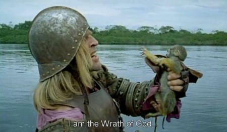

Tuesday, September the 12th, 2017
back to: title, date or indexes

This sprightly homage to Procol Harum first appeared in 2009.
Conquistador, your stallion stands in need of company. For an adventurer and conqueror, especially one who led the Spanish conquest of Mexico and Peru in the 16th century, this is a lapse on your part. You should never leave your horse alone and abandoned, for it is likely to become fractious, and the last thing you want to have to deal with, either in the jungles or the mountains, is a fractious horse. You might argue that a native Peruvian firing poisonous darts at you through a blowpipe would cause you more concern than a horse in a bad mood, but there you would be wrong.
Let's say that the native Peruvian's aim is impeccable, and his poisoned dart plunges into your neck. It is true that you would be surprised, and have only minutes to live as the toxins ravaged your innards, but it is a simple enough matter to pluck the dart out of your flesh and have one of your fellow conquistadors immediately suck on the puncture, drawing every last drop of poison into his mouth before spitting it out. Apply a medicinal poultice to the tiny hole in your neck and job done. You will be as right as rain and ready to carry on adventuring and conquering.
By contrast, if, after abandoning your stallion while you clanked off on foot on an errand of death, you return to it to find it lonely, fractious and temperamental, you may have some difficulty getting back into your saddle. Your horse may rear up on its hind legs and make terrifying bellowing noises. If you are not careful you could end up being crushed under its mighty hooves. A fleck of horse-spittle might land in your eye, blurring your vision. The rest of your conquistador troop may have ridden on ahead, leaving you behind, without food or water, or a compass. You will know, from your training back in Toledo, that it can take hours to becalm a fractious horse, by which time your chances of catching up with your fellow adventuring conquerors before nightfall are remote.
Unless the conquistador who sucked the poison out of your neck has stayed with you, you will now be all alone in a strange exotic landscape, famished. You do not know which fruits and berries are safe to eat, and in any case there will only be fruits and berries available to you if you are in the jungle. As I pointed out earlier, you might be up in the mountains, and there will be little to eat but impacted snow, which you will have to melt and soften before trying to shovel it down your throat. Bear in mind that the air is very thin up in the higher reaches of the Andes, and you will become exhausted quite rapidly, especially if you are expending energy hacking at a patch of snow to make it more easily meltable. Added to these imperilments, your horse will be hungry too, and its fractiousness may return, with a vengeance. You will have to find a way to placate it a second time, and by now it will be wise to your tricks, if it is a clever horse, which it probably is, having been chosen out of so many other horses to go on a conquistadorial campaign. It is also much more difficult to becalm a frightened horse in the dark, and the Peruvian night is far more eerie than the night in Toledo, with which both you and your stallion are familiar.
A further problem will present itself if a nocturnal Peruvian native fires a second poisonous dart into your neck through a blowpipe. Yes, it is simple enough for you to remove the dart, but without a fellow conquistador to suck out the venom, you will have to instruct your horse to do the deed. Not many horses are skilled in such an art. Apart from anything else, their mouths are much bigger than the average conquistador's mouth, and their teeth are huge, so it is exceedingly difficult for them to get sufficient purchase on your neck to suck with any conviction. Of course, if you have a vampire horse, it will suck away quite happily, but after draining the poison it will continue to suck your blood, until you topple over, pale and dead.
All things considered, conquistador, you are advised never to leave your stallion in need of company. No horse is an island entire of itself. Further tips on looking after your horse when adventuring and conquering in Mexico and Peru are available in the government pamphlet 50 Tips For Conquistadors On Looking After Your Horse When Adventuring And Conquering In Mexico And Peru (Crown Copyright) (out of print).
Hooting Yard on the Air, December the 4th, 2008 : “Lugubrious Fool” (starts around 16:16)
Hooting Yard on the Air, December the 10th, 2015 : “Laundry Bag Boy” (starts around 00:23)
Hooting Yard on the Air, November the 9th, 2017 : “Whither The Bint Of Shelmerdox?” (starts around 08:49)